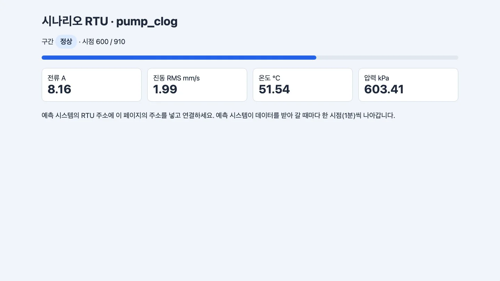
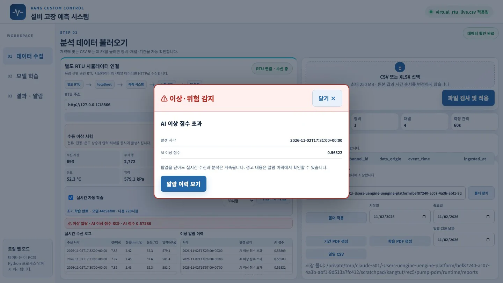
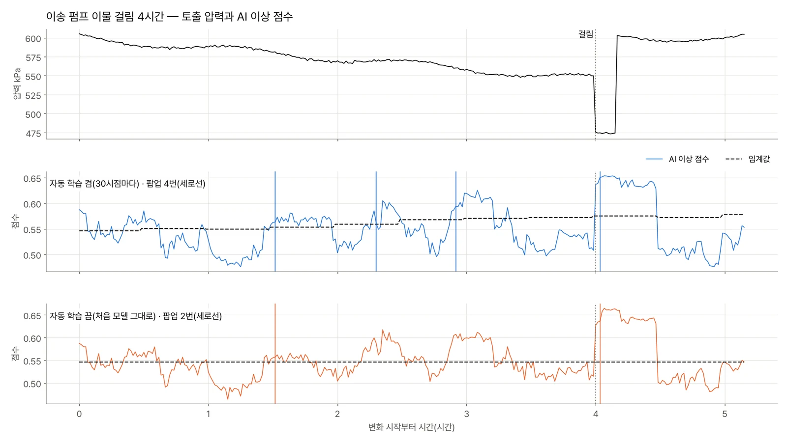
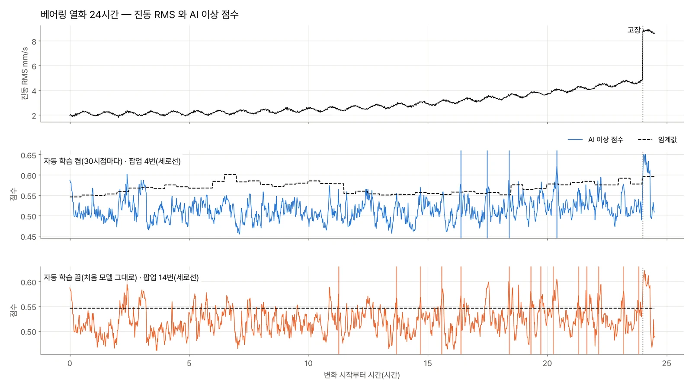

RTU 대신 「시나리오 RTU」를 연결합니다. 예측 시스템 코드는 그대로 두고 교반기의 고장 특성을 재생합니다. 이송 펌프 막힘, 베어링 열화, 레시피 변경, 원료 투입 충격을 넣고 「실시간 자동 학습」을 켠 경우와 끈 경우를 비교합니다. 30시점마다 다시 배우는 기본 설정은 레시피 변경에 빨리 적응합니다. 대신 서서히 진행되는 열화도 정상으로 학습합니다. 이 때문에 베어링 열화는 신호가 보이고 401분 뒤에야 알렸습니다.
무엇을 · 왜#
3장의 수동 이상은 네 채널이 한순간에 크게 바뀌는 시험이었습니다. 실제 교반 설비의 고장은 대개 이런 방식으로 발생하지 않습니다(1장).
| 시나리오 | 무엇이 바뀌나 | 길이 | 고장인가 |
|---|---|---|---|
pump_clog 이송 펌프 이물 걸림 |
4시간 동안 압력 600 → 545 kPa, 전류 8.4 → 7.7 A, 진동 +0.5. 끝에 걸림 10분(압력 470, 전류 12.5) | 5시간 10분 | 예 |
bearing 베어링 열화 |
24시간 동안 진동 RMS 2.1 → 4.8 mm/s(규칙 5.0 아래), 온도 +4 °C. 끝에 6 mm/s 이상으로 고장 | 24시간 30분 | 예 |
recipe 고점도 레시피로 변경 |
전류 +1.2 A, 온도 +3 °C, 진동 +0.35가 계속 | 10시간 | 아니오 |
loading 원료 투입 충격 |
5시간마다 4분 동안 진동 +2.0, 전류 +0.8 | 40시간 | 아니오 |
normal 대조 |
변화 없음 | 24시간 30분 | 아니오 |
모든 시나리오는 가상 RTU와 같은 정상 신호(2장)로 시작하고, 처음 600시점(10시간)은 정상입니다. 연결할 때 이 600시점을 이력으로 한꺼번에 전달합니다. 따라서 첫 모델은 확인된 정상 10시간으로 학습되고 바로 그 뒤부터 변화가 시작됩니다.
시나리오 RTU#
예측 시스템은 RTU에 두 가지 정보만 요청합니다. /api/status(지금 몇 시점까지 왔고 최신 값이 무엇인지)와 /data.csv(누적 데이터 전체)입니다. 같은 두 주소를 가진 작은 서버를 만들면 RTU 대신 연결할 수 있습니다(표준 라이브러리만 씁니다).
# kang/scenario_rtu.py 의 핵심
def do_GET(self):
path = self.path.split("?")[0]
if path in ("/api/status", "/api/peek"):
return self._send(200, feed.status()) # running, sample_count, latest_values …
if path == "/data.csv":
body = feed.csv() # 가상 RTU 와 같은 열 순서, asset_id=VIRTUAL_RTU_01
self._send(200, body, "text/csv; charset=utf-8")
feed.advance() # 받아 간 다음 한 시점(1분) 진행
가상 RTU는 시계에 맞춰 1초마다 진행하지만, 시나리오 RTU는 예측 시스템이 데이터를 받아 갈 때마다 한 시점씩 진행합니다. 그래서 모든 시점이 빠짐없이 한 번씩 분석되고, 같은 시나리오는 몇 번을 실행해도 같은 결과가 나옵니다. 장비 ID는 예측 시스템이 실시간 학습에 쓰는 VIRTUAL_RTU_01이어야 합니다(다르면 「학습 모델에 필요한 장비 식별자가 입력에 없습니다」가 뜹니다).
따라 하기#
-
가상 RTU(8766)는 끄고, 시나리오 RTU를 실행합니다. 예측 시스템은 열리자마자 8766에 연결하려 하므로, 가상 RTU가 켜져 있으면 그쪽에 먼저 연결됩니다.
python3 scenario_rtu.py --scenario pump_clog --port 18866 # 시나리오 RTU pump_clog: http://127.0.0.1:18866 (이력 600시점, 전체 910시점)브라우저에서
http://127.0.0.1:18866을 열면 지금 구간(정상 / 이물 걸림 진행 / 펌프 걸림)과 네 값이 보입니다.
시나리오 RTU 화면. 시나리오 이름, 지금 구간, 진행 막대, 네 채널 값 -
예측 시스템의 RTU 주소에
http://127.0.0.1:18866을 넣고 RTU 연결을 누릅니다. 600시점으로 첫 모델을 학습하고, 1초마다 한 시점씩 받아 분석합니다. 펌프 막힘은 약 5분이면 끝납니다. -
화면에서 다음을 지켜봅니다(시점 번호는 0부터 센 값입니다).
- 633번째 시점쯤부터 압력이 정상 흔들림 폭(±7.4 kPa)을 벗어나기 시작합니다.
- 691번째 시점에 첫 팝업이 뜹니다. 압력은 약 580 kPa로, 규칙 한계(500)보다 한참 높습니다.
- 그 뒤로 몇 번 더 울리다가, 걸리기 전 마지막 40분 동안은 AI가 한 번도 울리지 않습니다. 30시점마다 다시 배우면서 그사이 낮아진 압력을 정상으로 받아들였기 때문입니다. 임계값은 0.546에서 0.578로 올라갔습니다.
- 840번째 시점에 걸리면 압력 470 kPa(규칙: 압력 낮음)와 전류 12.5 A(규칙: 전류 높음)로 규칙 알람이 울립니다.

펌프 막힘 재생 화면. 691번째 시점의 첫 팝업 — 네 채널 값은 모두 규칙 한계 안입니다 
펌프 막힘 재생. 위는 토출 압력, 가운데·아래는 자동 학습을 켰을 때와 껐을 때의 AI 이상 점수와 임계값. 세로선은 팝업 -
이번에는
--scenario bearing으로 같은 과정을 반복합니다(약 25분). 한 번은 그대로 두고, 한 번은 연결하자마자 실시간 자동 학습 체크를 끕니다. 끄면 처음 10시간으로 배운 모델을 끝까지 씁니다.
베어링 열화 24시간. 자동 학습을 켜면(가운데) 임계값이 계단처럼 올라가고 팝업이 늦습니다. 끄면(아래) 일찍 울리지만 자주 울립니다 -
화면 없이 끝까지 빠르게 실행하고 싶으면
replay.py를 씁니다. 화면이 1초마다 하는 일(상태 요청 → 데이터 받기 → 분석)을 쉬지 않고 되풀이하고, 화면의 팝업 규칙(AI 3시점 연속, 정상 10시점 뒤 다시 허용)대로 팝업을 셉니다. 예측 시스템 코드는 고치지 않습니다.PDM=~/KANG_PdM_RTU_배포본_20261109/PDM_Program # 배포본을 푼 곳 python3 scenario_rtu.py --scenario bearing --port 18867 & OMP_NUM_THREADS=1 $PDM/.venv/bin/python -I replay.py $PDM http://127.0.0.1:18867 replay-bearing-auto.json # 자동 학습 켬 # 시나리오 RTU 를 다시 띄우고 --manual 을 주면 자동 학습 끔베어링 2,070시점이 약 5분, 원료 투입 3,000시점이 약 9분 걸렸습니다.
결과: 고장을 얼마나 일찍 알렸나#
「신호가 보인 때」는 바뀐 채널이 정상 흔들림 폭(사인 진폭 + 잡음 3σ)을 처음 넘은 시점입니다. 정상 데이터만 사용한 대조 실행에서도 ±5분 안에 뜬 팝업은 시나리오와 상관없는 헛팝업으로 보고 제외했습니다.
| 시나리오 | 신호가 보인 때 | 자동 학습 켬(기본) | 자동 학습 끔 | 규칙 |
|---|---|---|---|---|
| 펌프 막힘(840에 걸림) | 633 | 691 (신호 뒤 58분, 걸림 149분 전) · 걸리기 전 40분 동안 AI 0분 | 691 (같음) · 걸리기 전 40분 동안 AI 3분 | 840, 걸리는 순간 |
| 베어링 열화(2040에 고장) | 1182 | 1583 (신호 뒤 401분, 고장 457분 전) | 1275 (신호 뒤 93분, 고장 765분 전) | 2040, 고장 순간 |
결과: 고장이 아닐 때 얼마나 울렸나#
| 상황 | 자동 학습 켬 | 자동 학습 끔 |
|---|---|---|
| 정상만 24시간 30분 | 팝업 5번(하루 4.9번), AI 알람 44분 | 팝업 18번(하루 17.6번), AI 알람 164분 |
| 레시피 변경 뒤 10시간 | AI 알람 38분, 평소보다 늘어난 팝업 없음 | AI 알람 155분, 팝업 4번 더 |
| 원료 투입 충격 40시간(8번) | AI 알람 66분(평소와 비슷) | AI 알람 389분 |
자동 학습을 켜면 임계값이 계속 움직였습니다. 원료 투입 40시간 동안 80번 다시 배우며 0.546 → 0.655로, 베어링 열화 동안 48번 다시 배우며 0.546 → 0.597로 올랐습니다.
무엇을 배웠나#
- 30시점마다 다시 배워 곧바로 쓰는 방식은 「새 정상」을 빨리 받아들입니다. 레시피 변경처럼 진짜 운전 조건이 바뀐 경우에는 장점입니다. 하지만 베어링 열화나 펌프 막힘처럼 규칙 한계 아래에서 서서히 오는 고장도 같은 방식으로 받아들입니다. 재학습은 규칙 한계를 넘은 시점만 빼므로, 한계 아래의 열화는 다음 모델의 「정상」이 됩니다.
- 끄면 일찍 보지만 너무 자주 울립니다. 처음 10시간의 정상 데이터에는 정상 상태의 모든 패턴이 담기지 않았습니다. 온도의 사인 주기만 약 157분이고, 네 채널 주기가 겹친 모양은 10시간 안에 다 나오지 않습니다. 하루 17.6번 울리는 팝업은 곧 아무도 보지 않게 됩니다.
- 그러니 문제는 재학습 간격이 아니라 「무엇을 정상으로 배울지」를 누가 정하느냐입니다.
현장에 적용할 때 고려할 방법은 다음과 같습니다.
| 방법 | 무엇을 막나 | 무엇이 필요하나 |
|---|---|---|
| 레시피·배치 단계별로 기준선 나누기 | 레시피 변경·원료 투입 헛알람 | PLC의 레시피·단계 태그 |
| 다시 배운 모델을 바로 쓰지 않고 섀도로 돌려 비교한 뒤 바꾸기 | 열화를 정상으로 배우는 일 | 비교 기준(고장 기록이나 사람 확인) — 설비 예지보전 PBL 5장의 섀도·승격 |
| 사람이 정상이라고 확인한 구간만 학습에 넣기 | 같은 문제 | 운전자 확인 기록 |
| 고장 기록으로 확률 모델 만들기(4장) | 정상만 배워서 생기는 한계 | 고장 분류 정의와 라벨 |
비교를 위해 KANG에는 없는 단순한 방법도 같은 데이터에 적용했습니다. 처음 600시점(확인된 정상)의 중앙값과 값이 흩어진 정도를 기준으로 20시점 평균을 비교해 크게 벗어나면 알리는 「고정 기준선」입니다. 이 방법은 베어링 열화를 신호 뒤 198분(고장 660분 전)에, 펌프 막힘을 78분 뒤(걸림 129분 전)에 알렸습니다. 정상·원료 투입에서는 한 번도 울리지 않았습니다. 대신 레시피가 바뀌자 494분 동안 알람이 이어졌습니다. 레시피 태그 없이 기준선을 고정하면 이렇게 됩니다.
이 결과의 범위
모두 합성 데이터로 한 번(seed 42) 실행한 결과입니다. 현장 성능이 아니라 각 설정이 어디서 어긋나는지를 보여 줍니다. 실제 설비에서는 고장 모양도, 정상의 흔들림도 다릅니다.
확인 문제#
-
펌프 막힘에서 자동 학습을 켠 경우, 걸리기 직전 40분 동안 AI가 조용했던 까닭은 무엇일까요?
정답
압력이 4시간에 걸쳐 조금씩 떨어지는 동안 30분마다 모델을 다시 학습했고, 그때마다 낮아진 압력(규칙 한계 500 kPa 위)을 정상 학습 데이터에 넣었습니다. 임계값도 0.546에서 0.578로 올라갔습니다. 걸리기 직전에는 이미 「낮은 압력」이 새 정상이 되어 있었습니다.
-
자동 학습을 끄면 베어링 열화를 300분 넘게 일찍 알립니다. 그런데도 끄기를 권하지 않는 까닭은 무엇일까요?
정답
정상 데이터만 들어올 때도 하루 17.6번 팝업이 뜹니다. 팝업이 이렇게 잦으면 사람이 보지 않게 되어, 진짜 열화 알람도 묻힙니다. 처음 학습한 10시간의 데이터에 정상 상태의 모든 패턴이 담기지 않았기 때문입니다. 정상 구간을 충분히 길게 잡고, 레시피별로 나누고, 바꿀 모델은 섀도로 비교한 뒤 바꾸는 쪽이 낫습니다.
-
회사에서 PLC 태그 사전을 받았습니다. 이 장의 결과로 보아 가장 먼저 찾아야 할 태그는 무엇일까요?
정답
레시피·배치 단계·설정 회전수·운전 상태 태그입니다. 이 태그가 있어야 「레시피가 바뀌어서 달라진 것」과 「설비가 나빠져서 달라진 것」을 나눌 수 있습니다. 그다음이 펌프 토출 압력과 모터 전류, 그리고 트립·인터록 이력(4장의 라벨)입니다.